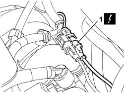
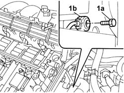

5510C45 DETONATION SENSOR (one- remaining) R.R. after Op. 5510C44
- Path
- Procedures > 55 ELECTRICAL EQUIPMENT > 5510 ENGINE IGNITION > 5510C COIL, CONTROL UNIT, SENSORS > 5510C45 DETONATION SENSOR (one- remaining) R.R. after Op. 5510C44
- Kind
- repair procedure (removal / refitting; the operation number is the code)
- Applies to
- engines: 2.4 20V; all production periods
- Interactive page
- https://sloeber94.github.io/elrnDB-lThss/en/#/79403
Applies to: engines: 2.4 20V; all production periods
 Removing
Removing
 Refitting
Refitting- Make sure that the ignition key is in the OFF position, then disconnect the negative battery terminal (-).
See in Op. 7040D50 ENGINE COMPARTMENT UPPER SOUND INSULATION SHIELD - R.R.
1. Disconnect the detonation sensor electrical connector.
 | Description | Connector |
|---|---|---|
1 | Detonation sensor - 2 | K051 |

Applies to: engines: 2.4 20V; all production periods
See in Op. 1016A40 Ignition COIL COVER on cylinder head - R.R.
See in Op. 1048A28 vacuum air circuit resonator pipe - r+r
See in Op. 1048A48 HOSE BETWEEN RESONATOR AND THROTTLE CASING - R.R.
See in Op. 1056B14 THROTTLE CASING - R.R.
1. Undo the bolt (1a) and remove the detonation sensor (1b).

Applies to: engines: 2.4 20V; all production periods
Refitting
Removing- Place the detonation sensor in its housing and secure it using the bolt.
See in Op. 1056B14 THROTTLE CASING - R.R.
See in Op. 1048A48 HOSE BETWEEN RESONATOR AND THROTTLE CASING - R.R.
See in Op. 1048A28 vacuum air circuit resonator pipe - r+r
See in Op. 1016A42 LEFT CYLINDER HEAD IGNITION COIL COVER - R.R.
- Connect the detonation sensor electrical connector.
| Description | Connector |
|---|---|---|
. | Detonation sensor - 2 | K051 |
See in Op. 7040D50 ENGINE COMPARTMENT UPPER SOUND INSULATION SHIELD - R.R.
- Connect the negative battery terminal.
Topics linked from this page (6)
- 1016A40 Ignition COIL COVER on cylinder head - R.R.
- 1016A42 LEFT CYLINDER HEAD IGNITION COIL COVER - R.R.
- 1048A28 vacuum air circuit resonator pipe - r+r
- 1048A48 HOSE BETWEEN RESONATOR AND THROTTLE CASING - R.R.
- 1056B14 THROTTLE CASING - R.R.
- 7040D50 ENGINE COMPARTMENT UPPER SOUND INSULATION SHIELD - R.R.